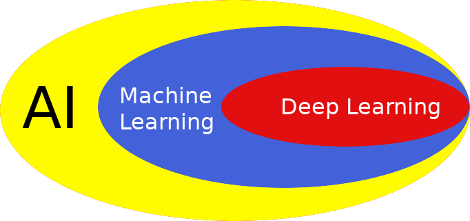
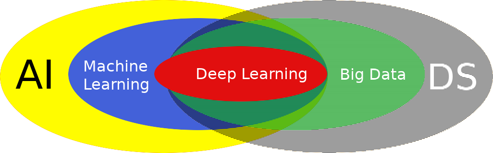
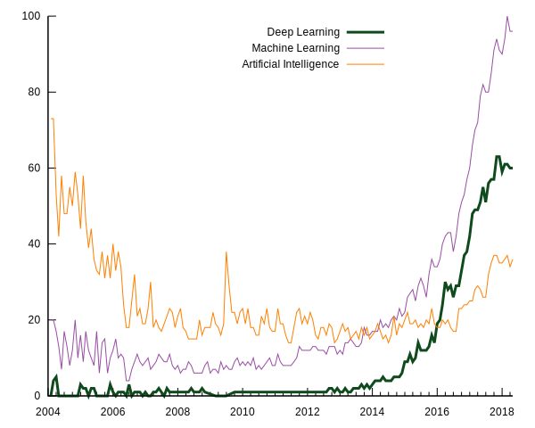
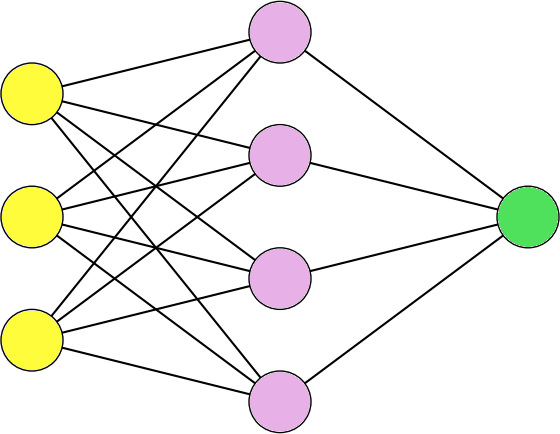

Начнём с формулировок
- Зачем так много названий?
- Что такое..
- ..искуственный интеллект?
- ..глубокое обучение?
- ..машинное обучение?
- ..глубокое обучение?
- Зачем так много названий?
Тянем за хвост Уробороса
Глубокое обучение — современное применение глубоких нейронных сетей для машинного обучения
Глубокое обучение — техника машинного обучения, которая заправляет всей происходящей сейчас революцией в области искуственного интеллекта
вроде одно и то же сказано
Картинка
DL — способ решать задачи ML
Больше пересечений!
DL невозможен без DS и хороших данных
Поисковые тренды
Почему сейчас стало можно?
- Мощности компьютеров позволяют
- Данных стало много
- Матчасть дошла до технологий
Как следствие, появились доступные «простым смертным» технологии для внедрения и использования
Почему сейчас это нужно?
Последние десять лет мы слезали с компьютеров на мобильные устройства
Ближайшие десять лет все будут «перелезать» на AI-driven технологии
Сейчас самое то
«Три года назад вкладываться в машинное обучение было расточительной тратой времени. Через три года вкладываться в машинное обучение будет поздно»
Dan Olley в апреле 2016, CTO Elsevier — один из мастодонтов научной коммуникации
Внезапная интерлюдия!
Чтобы дальше продолжать понимать друг друга, надо ввести пару терминов
flipchart: decision matrix
Всё ещё не проговорили что такое DL
Глубокие нейронные сети позволяют хорошо приблизить любую непрерывную функцию
Значит, что:
A: {есть размеченные данные}
B: {есть хороший механизм их оценки}
A → B
Нейронные сети дают универсальный оцениватель любой непрерывной функции
Всё ещё не проговорили что это такое!!!
Что это за оценки? О чём речь?
Зачем вообще оценивать данные?
Какое обучение у машины?

Пример с сетью
flipchart: decision nn
А минусы?
Нельзя сделать выводы из данных если данных нет
Выбор архитектуры сети это почти искусство
Экстраполяция ≪ интерполяция (не всегда)
Переобучение поджидает за углом (всегда)
Вообще нужны неслабые ресурсы (почти всегда)
Демо
Контрасто-осведомлённый сервис для выбора иконки к цвету
Маленькая задача, для которой не нужны нейронки
Можно сделать без фреймворков